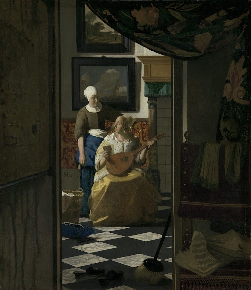

Jouw profielfoto
Zet je favoriete werk bovenaan! En maak het je profielfoto!
-
Rembrandt van Rijn zelfportret
Rembrandt van Rijn

-
De bedreigde zwaan
Jan Asselijn
-
Het Melkmeisje
Johannes Vermeer
-
De Nachtwacht
Rembrandt van Rijn

-
De LiefdesBrief
Johannes Vermeer
 -
De Tijd
Pieter Christoffel Wonder
-
Zelfportret Vincent
Vincent van Gogh

-
Musicerend gezelschap
Rembrandt van Rijn
-
Venus en Adonis
Ferdinand Bol